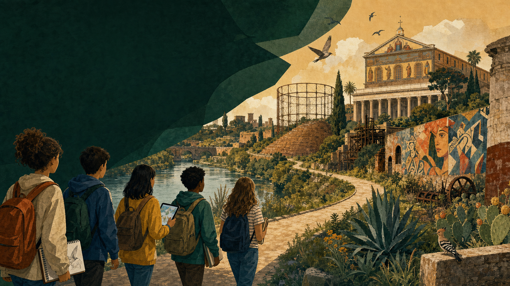

Esplora
Uscite didattiche, osservazione del paesaggio e incontro con i luoghi.

San Paolo · Ostiense · Testaccio
Un viaggio interattivo tra natura, memoria e comunità. Osserva, ascolta, raccogli indizi e diventa custode dei luoghi che vivi.
Scegli il tuo sguardo
Ogni itinerario cambia il modo di osservare: natura per i più piccoli, trasformazioni urbane per i più grandi, oppure il racconto completo.
Il passaporto del custode
Ogni tappa propone una piccola missione: osservare, ascoltare, raccogliere una memoria o immaginare il futuro. Le scoperte restano salvate sul dispositivo.
Dall'esperienza alla comunità
Uscite didattiche, osservazione del paesaggio e incontro con i luoghi.
Fotografie, disegni, testimonianze, suoni e piccoli dati di campo.
Schede, podcast, mappe, documentari e materiali accessibili in CAA.
QR code, mostra finale e una memoria digitale aperta alla cittadinanza.
La città è un libro aperto